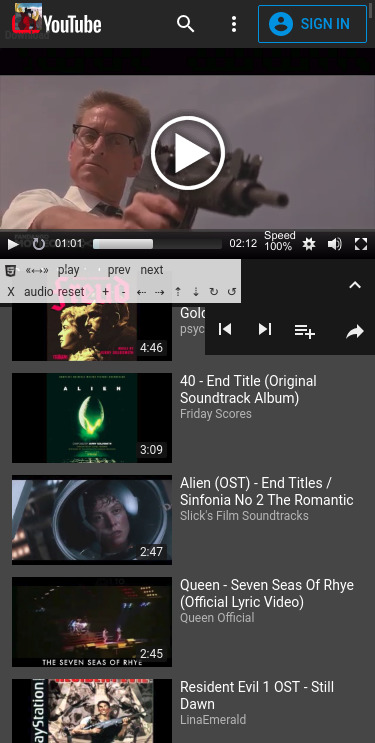
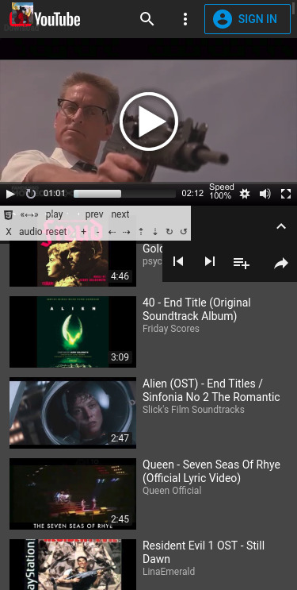
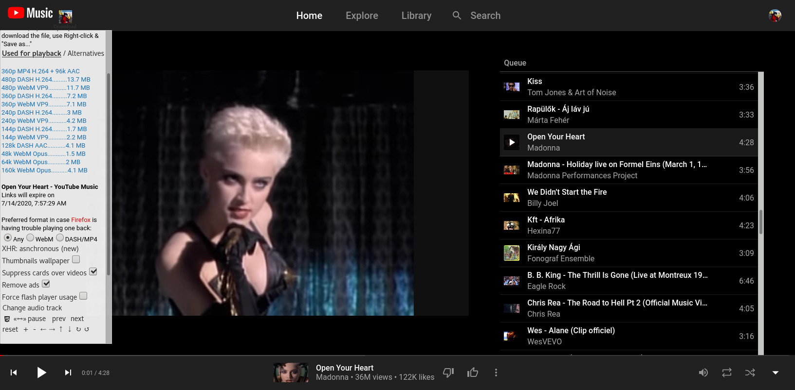
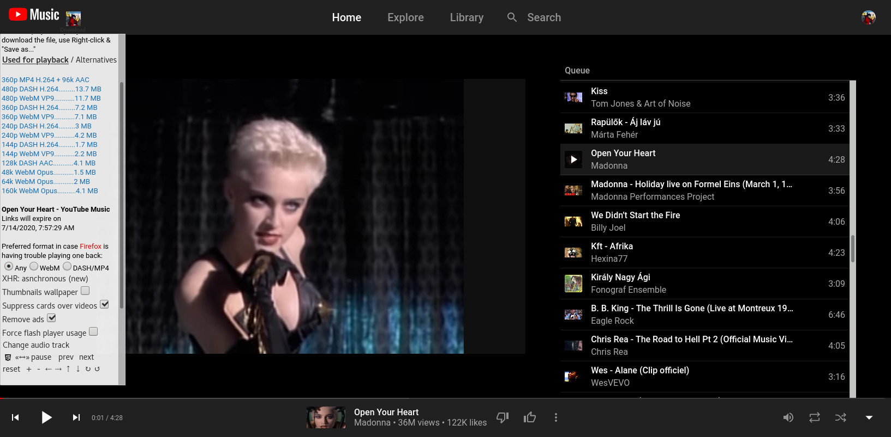

 

Yt6 -- Snarl's YouTube Video Player (bookmarklet)
Last updated on Jul 25, 2021 20:45
Please note: a bookmarklet cannot update itself. You either come back here once in a while to create a new instance for yourself, or the ever evolving YouTube site will eventually break it. Version number is the date of the last update, included on the bookmarklet line at its very end, looking like this: /*202107252045*/Features
On any YouTube video (watch) page, this bookmarklet will call an external player and load some extra functions, some of which can be used with YouTube's original player as well. Written in pure javascript with the aim to be as much platform-independent and backwards-compatible as possible. There is no installation, it works on-demand. Only a working internet connection is needed. The program is able to- restrict on-site advertisement,
- resize, zoom, rotate and move around video picture arbitrarily,
- select the desired media sequence to loop,
- change playback rate ("speed" or tempo) from 0 or 25% to up to 500 or 1600%,
- load an external audio file to play alongside the current video,
- pick your favoured (and supported) video/audio codec and resolution for playback,
- download the video/audio content,
- download subtitles/closed captions (CC)
-
On bookmarklet line, you can edit the value
of "add_subs" after the equal sign and between apostrophes (a comma separated list
of ISO 639-1 languge codes, such as
'en, de, fr, es, jp'...) to add Google-Translated tracks of your choice, - facilitate background play while your mobile is in sleep mode (experimental)
- bypass age verification (used to work when video embedding was allowed by the content owner)
-
Examples: Tunnel Vision (signatures encrypted), Cobra (signatures unencrypted)
In June 2021, YouTube shut down its old get_video_info data interface which was helpful in bypassing the age-gate, thus the script has lost this feature for now even for videos with less copyright protection (2nd example). :( - change between YouTube layouts by setting the cookie on exit no longer works :(
-
YouTube stopped honoring the setting in July 2020 and shut down its classic layout for good early December.
I wrote a userscript that partially restores it though. See the YouTube Classic layout section for details.
Keep in mind that this is not a browser extension. If anything, it's an extension of the YouTube video page. Any event resulting in a browser page refresh such as
- leaving the current YT subdomain,
- typing URLs directly to the address bar (instead of following links),
- or even just navigating between two points in your browsing history where a full page refresh has already taken place
will cause the program code to be removed from memory and you would need to reload it.
Setup
- Right click / hold your finger on the Yt6 link above, and "Copy link address". If you have no such option, the code is written below in plain text, select and copy it manually
- Bookmark any web page (this one for example)
- Edit the created bookmark's Properties / Location: delete its URL-address entirely, and paste this snippet of javascript code in its place. (Optionally, you can give it a name of your choice too.)
- Save the changes, if there is a Save button!
Also, in many desktop browsers you can simply drag and drop the link to the Bookmarks Toolbar, or right click on it and select "Bookmark this link".
Code in plain text:
javascript:(function(){var v='d9c3a7b18d1009fa2ed8218f44b65e2a7c4537ff/yt6.js',w=window,d=w.document,h=d.location.href,yt6=w.yt6||{},yt6d=w.yt6d||{};if(yt6d.loaded>=4)return void 0;if(h.split('youtube.com/watch')[1]||h.split('youtube.com/embed')[1]||h.split('/base.j')[1]=='s'){var id='snarls_player',e='script',q;yt6.loaded=0;function s(x){x=x||id;return d.getElementById(x)};function c(e){return d.createElement(e)};function a(q){s().appendChild(q);s().add_subs='en,hu,de';yt6d.src=q.src};function r(){if(s()){var x;try{x=s().querySelector('#'+id)}catch(e){x=s().firstChild};if(x)s().removeChild(x)}};function b(){var i,j,o,x;o=['rawcdn.githack','cdn.rawgit','js'];for(j,x,i=o.length;i;j=Math.floor(Math.random()*i),x=o[--i],o[i]=o[j],o[j]=x);if(yt6d.src==-1)o.splice(0,0,'raw.githubusercontent');q=c('div');q.id=id;if(q!=s())d.body.appendChild(q);var src='https://'+o[0]+'.com/snarly/yt6/'+v,src0='https://cdn.jsdelivr.net/gh/snarly/yt6@'+v;function oc(ox,oy,sr){return(oy!='js')?sr.replace(ox,oy):src0};q=c(e);q.id=id;q.src=(o[0]!='js')?src:src0;q.onerror=function(){q=c(e);q.id=id;q.src=oc(o[0],o[1],src);q.onerror=function(){q=c(e);q.id=id;q.src=oc(o[0],o[2],src);q.onerror=function(){q=c(e);q.id=id;q.src=oc(o[0],o[3],src);q.onerror=function(){q=c(e);q.id=id;q.src=src.replace('https','http')};a(q);r();};a(q);r();};a(q);r();};try{a(q);}catch(f){a(q)};};function g(){try{deldiv()}catch(f){r()};yt6d.src=1;b()};if(!s()){b()};setTimeout(function(){var t=w.yt6;if(t)t.loaded=t.loaded||window['status'];if(!t||(t&&(!t.body||(t.loaded<3))))g()},3000);}else{void 0};})()/*202107252045*/
__
How to use
On Desktop, just click on it on your bookmarks list whenever you enter a YouTube video you want to play around with, unless you have the code already running.On mobile, tap the browser's URL-address bar first (NOT the YouTube search bar!). After that, the browser should suggest it as an available option once you start typing either its name ("Yt6" or whatever you named it) or the prefix "javascript:" to narrow the search down to bookmarklets only. Tapping on the correct entry shall initiate the call.
If it doesn't seem to work, it may be because of installed script blocker extensions. See the Important Notes section to learn how to resolve this.
Automatic playback depends on the state of YouTube's own "Repeat / Loop Playlist" (the circular arrows) button on user-created playlists.
Use the HTML5 emblem on the control panel to switch between the native and this alternative player.
It is possible to use the code as a userscript with the help of addons like
-
Greasemonkey (for Firefox),
Tampermonkey (for Firefox, Chrome, Edge and Opera) or
Violentmonkey (for Firefox, Chrome and Edge)
// ==UserScript==
// @name Yt6 -- Snarl's YouTube Video Player (userscript)
// @namespace yt6
// @version 202107252045
// @author Snarl
// @description Auto-Load Yt6 script as soon as possible
// @match https://*.youtube.com/watch*
// @match https://*.youtube.com/embed/*
// @match http://*.youtube.com/watch*
// @match http://*.youtube.com/embed/*
// @grant none
// @run-at document-end
// @icon https://yt3.ggpht.com/-afBnHVG_R6E/AAAAAAAAAAI/AAAAAAAAAAA/LtE5kbPkZvE/s27-c-k-no-mo-rj-c0xffffff/photo.jpg
// ==/UserScript==
(function(){
window['yt6'] = {}; window['yt6d'] = {}; window['yt6'].body = 1
var idle_time = 1000 // wait some time before running the bookmarklet part
var onComplete = function(){setTimeout( //javascript:(
(function(){var v='d9c3a7b18d1009fa2ed8218f44b65e2a7c4537ff/yt6.js',w=window,d=w.document,h=d.location.href,yt6=w.yt6||{},yt6d=w.yt6d||{};if(yt6d.loaded>=4)return void 0;if(h.split('youtube.com/watch')[1]||h.split('youtube.com/embed')[1]||h.split('/base.j')[1]=='s'){var id='snarls_player',e='script',q;yt6.loaded=0;function s(x){x=x||id;return d.getElementById(x)};function c(e){return d.createElement(e)};function a(q){s().appendChild(q);s().add_subs='en,hu,de';yt6d.src=q.src};function r(){if(s()){var x;try{x=s().querySelector('#'+id)}catch(e){x=s().firstChild};if(x)s().removeChild(x)}};function b(){var i,j,o,x;o=['rawcdn.githack','cdn.rawgit','js'];for(j,x,i=o.length;i;j=Math.floor(Math.random()*i),x=o[--i],o[i]=o[j],o[j]=x);if(yt6d.src==-1)o.splice(0,0,'raw.githubusercontent');q=c('div');q.id=id;if(q!=s())d.body.appendChild(q);var src='https://'+o[0]+'.com/snarly/yt6/'+v,src0='https://cdn.jsdelivr.net/gh/snarly/yt6@'+v;function oc(ox,oy,sr){return(oy!='js')?sr.replace(ox,oy):src0};q=c(e);q.id=id;q.src=(o[0]!='js')?src:src0;q.onerror=function(){q=c(e);q.id=id;q.src=oc(o[0],o[1],src);q.onerror=function(){q=c(e);q.id=id;q.src=oc(o[0],o[2],src);q.onerror=function(){q=c(e);q.id=id;q.src=oc(o[0],o[3],src);q.onerror=function(){q=c(e);q.id=id;q.src=src.replace('https','http')};a(q);r();};a(q);r();};a(q);r();};try{a(q);}catch(f){a(q)};};function g(){try{deldiv()}catch(f){r()};yt6d.src=1;b()};if(!s()){b()};setTimeout(function(){var t=w.yt6;if(t)t.loaded=t.loaded||window['status'];if(!t||(t&&(!t.body||(t.loaded<3))))g()},3000);}else{void 0};})()
//)()/*202107252045*/
, idle_time)
}
var check = function(){ // conditions to meet before loading
var x = window['performance'];
if (x && x.timing && x.timing.loadEventEnd > 0 && x.timing.loadEventEnd >= x.timing.domComplete) return true
}
if (check()) {
onComplete()
return
}
var delay = 500, timeout = 8000
var timeoutPointer
var intervalPointer = setInterval(function () {
if (!check()) return
clearInterval(intervalPointer)
if (timeoutPointer) clearTimeout(timeoutPointer)
if (typeof onComplete == 'function') onComplete()
},delay)
if (timeout) timeoutPointer=setTimeout(function () {
clearInterval(intervalPointer)
},timeout)
})()
Background play on Mobile
You won't have to request YouTube's resource-hungry Desktop mode to be able to listen to videos over a locked screen -- the site's lightweight Mobile version will do just fine. Use the 48k Opus audio-only format for playback to save as much power as possible. (The drop in sound quality rarely becomes noticeable.) Beside the fact that picking a video format for background play is pretty much pointless, it would also raise the chance of playback failure significanty. There are some browsers which don't like playing audio on its own that much though.Drawbacks:
- the jump forward button on the locked screen's media control panel will never work (by design, because they do not want you to use their site for continuous background play on mobile)
- the media controls over the screen lock provide real access only to the original player, thus when the alternative player is the active one, the panel's play button is merely able to kickstart it, but you can't pause it or seek forward or backward on its time rail.
I recommend to empty the device's cache before starting, it should have a positive effect on performance. (You can also check memory consumption with the memory cleaner app without actually starting the cleaning procedure.)
There is an issue on mobile when you load the script after having arrived to YouTube on pages of the non-video kind (like search results, channels, playlists, whatever). Namely that after the initial video, further navigation to subsequent videos may be completely missed by the program... I still have to remedy this occasional misbehavior, but you can easily prevent it from happening in the first place by simply doing a page refresh right before you would run the bookmarklet.
Another important thing to note: having Desktop view mode requested on one tab while the default Mobile version of YouTube is also being used on another tab may cause the script to fail. So close one or the other before trying.
Supported browsers
On Desktop, the script should work with almost any browser now. The only criteria is that they must support the usage of bookmarklets, which most of them do.Below is a ranking of popular Mobile browsers based on how well they work under the following conditions
-
- using the script's alternative player
- on YouTube's mobile interface (m.youtube.com)
- while the device is in actual sleep mode (screen turned off and with no connection to any external power source through cable)
- Brave can use the mobile UI without the help of this script
- Vivaldi's built-in Tracker and Ad Blocking can sometimes be painfully slow on YouTube, making it a severe hindrance for background play. To improve performance, you can add an exception for youtube.com ("No blocking"), and let the script handle ads
- Google Chrome -- its ad-flood can be neutralized fairly well now
So-so (playback may fail after a few videos)
- Ecosia
- Edge
- Kiwi
- Firefox's bookmarklet support is back again (note: last Desktop-based version was 68.11.0)
Bad ones (playback works, just not in sleep mode)
- Yandex's performance fluctuates between OK and bad recently
- Lightning
- Private Proxy Browser
Unsupported
- Opera for mobile no longer supports bookmarklets -- one less reason to use it
- Firefox Focus, DuckDuckGo, Samsung, Qwant, Mint ...
Good ones (for Android)
Regardless of platform, the default "noname" browsers that come pre-installed on various systems typically have no support for bookmarklets. If your chosen browser's response to your attempt to use the bookmarklet is to pull a web search on words found on the bookmarklet line, it is safe to say it doesn't support it.
Legacy browsers
Till June/July of 2020 the bookmarklet was usable with really old browsers too that were dated back to around the IE7/8 era (with the help of the Adobe Flash plugin), but now that YouTube enforces its bug-filled new layout, they broke compatibility with them.Still, I found a way to make use of this script with outdated browsers anyway.
It's obviously discouraged to use them because of the myriad of security holes that can be found in such old sowftware, not to mention that the development of Adobe Flash also ended officially in 2020. It is possible to reactivate Flash, although only Firefox 84, Edge 87, Chrome 87 and older browsers will acknowledge the presence of the plugin now. But in case you have no other option, the possibility is there.
The trick is to visit the "embed" page which contains a stripped-down code normally used to create an embedded video on other websites. There is literally nothing on these pages beside the player itself, therefore it's super lightweight which makes it a legit choice even for modern browsers (if you just want simple playback in the background). It's clunky and inconvenient to use on mobile, not recommended there. On desktop, it's okay.
Regular video URL with playlist
https://www.youtube.com/watch?v=QRM-HWRLbBc&list=PLXlj3dvMsYiLWcmENQsUHEQr8Snw1PH3X&index=1081
The "embed" variant to enter on the address bar
https://www.youtube.com/embed/QRM-HWRLbBc?list=PLXlj3dvMsYiLWcmENQsUHEQr8Snw1PH3X&index=1081
Pro: the alternative player can play videos which are otherwise blocked from view in embedded frames.
Con: due to a YT limitation you can only navigate through the first 200 videos on an embedded playlist. The example above is the 1082th entry (indexed 1081) on the list and it will load fine, but once you try to navigate, there will be no way to watch anything above index 199.
Classic YouTube layout
The html code of the old layout is no longer being produced by YouTube's php servers (the javascript and css belonging to are is still accessible). That means we will only ever see the classic layout again if we produce that html ourselves.Based on a few backup copies of YouTube page sources, I wrote a userscript which attempts to recreate the old html structures and inject them into the current page to make the two layouts co-exist at the same time.
Unfortunately, most of the server functionality related to the old stuff were shut down, so there is a dependency on the new layout, which makes the homemade html more like a skin than a standalone interface. It still has a few advantages over the material design, such as the exact number of likes and video views, or its well-defined frames.
Sadly I never made any backup copy of the html source code while being logged in to the site. Those pages obviously looked and worked differently than the ones shown to anonymous visitors. Searching the web for such html content left me with very limited results. So don't be surprised if not everything feels exactly the way it used to.
Most bugs are attributed to the fact that the two layouts use different methods to deal with browser navigation. One notable bug occurs on old-style playlists: the player keeps jumping back to the video entry next to the one we started off from each time a third video is about to come up. This bug can be eliminated partially by clicking the playlist's "Shuffle" button (crossed arrows). The shuffle can be turned off right after it's been activated (it would not have its intended effect on the player anyway), and even though the displayed old html content may belong to a different video, at least the playback will work fine from then on.
It can be used independently from the main project script, however I advise you not to use this one on Mobile. Kiwi and Yandex would let you install browser extensions capable of running userscripts like this, but the two desktop layouts working concurrently just drains the battery too fast. It's not worth it.
Stream capturing
The yt6 script can expose URLs in the sourcechooser / download box which doesn't seem to work -- there is no way to load them for playback, and trying to download the linked content would either result in a zero-length file or merely a short segment of a live stream.That's because there is no contiguous media file behind those links. Only fragments of media -- hardly usable in the old-fashioned way -- meant to be streamed by a player capable of streaming. You can recognize these URLs as video- or audio-only sources which have no file size displayed next to them. Since a recent update of the yt6 code, along with the stream URLs appears a link to a "DASH Manifest", and in case of live streams, a "HLS Manifest" too, which are XML documents containing info on the streamable bits.
Here is one example of the "yt_otf" type.
I wrote a small bash shell script called
yt_streamcat which makes it possible to save
the media behind those type of URLs as well. It's a Command Line Interface (CLI) utility
which relies on a widely used binary program called wget to be installed on the system.
Having ffmpeg, "The swiss army knife of Internet Streaming" installed is a huge bonus,
and in case ffmpeg produces broken media, you may need an alternative tool capable of
media muxing, such as mencoder, to process the broken file and fix it for good.
The script is supplementary code to do the job which is not possible for the yt6 main program in a javascript environment. Save the program file (link below) to an accessible subfolder on your computer -- preferably a dedicated folder you don't mind getting filled up with temporary media file segments -- open a virtual terminal with the bash shell running and change working directory ("cd" in)to that folder.
Currently, the script has only a Linux version available, but it shouldn't be too hard to port it to Windows.
Under Linux, newly created or downloaded files cannot be run by default, regardless of whether they are meant to be executables or not. Technically speaking they are not marked as executable, for security reasons. In order to make a file executable for your own user only, you must run the following command at the shell prompt:
chmod u+x [path to file/]filename
The script command itself must be issued the following way:
./yt_streamcat target_file "stream_base_URL" start end "2nd_stream_URL"
where
-
If you use add-ons like NoScript (a recommended practice), make sure to
Whitelist / Trust these domains permanently:
githubusercontent.com - program code is stored on this site
rawgit.com - #1 proxy to load the files
githack.com - #2
jsdelivr.net - #3
api.codetabs.com - (should not be necessary but it wouldn't hurt either)
youtube.com - won't even budge without its own javascript code running
googlevideo.com - youtube media is delivered through this domain
-
On videos with strong copyright protection, it is often the case that YouTube sends deliberately wrong signature decryption keys on the first try. I did not implement a fully automatic update of video signatures because of the high risk of infinite loop on repeated failure. You MUST switch over to the alternative player to manually initiate playback on multiple formats till enough errors occur for the updating procedure to fire. The video can be downloaded as soon as it becomes playable on the alt-player. The appearing blue gauge on its time rail will show that the video data has arrived and is buffering.
-
The alternative player of Yt6 uses the Progressive Download method to access video & audio, instead of the Adaptive Streaming YouTube's own player had as the default since late 2013.
Both have their pros and cons. With the former, media is getting piled up in the browser's cache during playback, which means there must be enough free space for storage either in the system RAM or on the disk. While in the case of streaming, you only have tiny slices of the media buffered at all times, which in turn requires higher CPU-power and constantly fast network speeds.
Consequently, for live streams or Ultra-HD videos it's recommended to switch over to YouTube's native player, as it is much better suited for those.
To make sure your browser chooses memory over the much slower and/or fragile Hard Disk / Solid-state drive for temporary storage, use the program in an Incognito / In-private browser window or tab. -
Occasionally, some age-restricted videos may get the same subdomain for their source location as known YouTube video commercials which have already been registered with adblockers such as uBlock Origin or Brave Browser's ad-shield, and as a result, their download links will be made inaccessible by these adblockers as well. Except if
- you are logged in to an eligible YouTube account
- don't use ad-blockers at all
- or set up exceptions in the ad-blocker's settings
youtube.com -- for the player data and
googlevideo.com -- to access the media links
will do the trick, although this way you may end up getting some video ads too.
(You first need to activate the Advanced User mode in uBlock Origin's settings menu to be able to do this. Tutorial: https://www.youtube.com/watch?v=SIYcI2tEqo8)
./ means the program file is located in the current directory (in Windows, .\ would
mean the same thing)yt_streamcat
- is the script file we run as our command
target_file (mandatory)
- is a user-specified file the media segments are going to be written into -- must not
exist yet, if it does, the script will abort to prevent an accidental overwrite
"stream_base_URL" (mandatory)
- is a YT stream source URL originating from one of the two possible types of videos
mentioned above, extracted by the yt6 main program. Must be enclosed in quotation
marks to prevent bash from misinterpreting each URL-parameter (after each "&"
sign) as yet another command to run in the background.
start (optional)
- is the number of the segment the media should begin download from. For live
streams, you should give this a value somewhere between the first and last
available "sq" (segment query?) parameter values which you can read on the DASH and HLS
Manifest URL lines. If you go over that range, the download will start with the
most recent live segment. If you go below it, the download will stall.
end (optional)
- is the number of the ending segment, or if it's less than the previous number, it will
be interpreted as the number of segments to download
"2nd_stream_URL" (optional)
- to save another track parallel to the first one (an audio stream, maybe?). Must be
between quotes as well. (You must specify the previous two options in order to be
able to specify this fifth one.)
It is easier to write a wrapper script to handle the program rather than always have to type out the whole command line yourself. Then just edit the part which needs to be changed. The wrapper should look like something like this:
#!/bin/bash ./yt_streamcat v \ "https://[...]googlevideo.com/videoplayback?[...]" \ 100 \ 150 \ "https://[...]googlevideo.com/videoplayback?[...]"
where the target file will be "v" (thus the secondary source will be saved to "vA"), number 100 is going to be the first segment to be saved and 150 will be the last. Notice the
\ character, which is the escape character in most programming languages.
It escapes a line break inside the wrapper for the lines before and after it which bash
is supposed to interpret as a single line of command. (No other character must be present
between the escape character and the following invisible newline character.) You can
name the wrapper file anything you want, just make it executable the same way as
above, then enter ./[wrapper_filename], and it will run the command(s) inside of it.
One way to abort a running bash script process is to hit Ctrl+C on the terminal. A temporary helper script is always generated automatically for such events to take care of the remaining minimum steps in the muxing procedure. Its default filename is
0[target_filename]-yt_streamcat-ffmpeg, you just have to execute
it.
In my tests, live-streamed webm video content seemingly encoded as 30fps, had to be regularly remuxed to a framerate of anywhere between 36 and 36.25fps in the saved file, then also remove one segment from the beginning in order to get it synced up with the audio track. No idea why that is the case, but it is. For higher framerates, the difference should be even larger.
Remuxing commandline examples:
To fix a broken mp4mencoder v.mp4 -ovc copy -o v2.mp4To change the framerate of a webm from 30 to 36
mencoder v.webm -ovc copy -mc 0 -noskip -fps 30 -ofps 36 -o v2.webmTo cut the first video segment out, mencoder's seek option must be a bit less than each segment's duration, so if they are 5 seconds long, 4 seconds will do
mencoder v2.webm -ovc copy -ss 4 -o v3.webmFinally, to mux the video and audio into one matroska file
ffmpeg -i v3.webm -i vA.aac -c:v copy -c:a copy v.mkvCheck if the mkv is playable, then remove the intermediate files.
__
Credit should go to the authors of their respective open source code I had my own built around:
John Dyer - Mediaelementplayer - http://mediaelementjs.com/
Christian Heilmann - Transformvideo - http://github.com/codepo8/rotatezoomHTML5video
Steven Penny - Youtube download bookmarklet - (closed account)
This program is free to use for anyone.
But if you would like to, you can tip me anonymously through an option included.
__